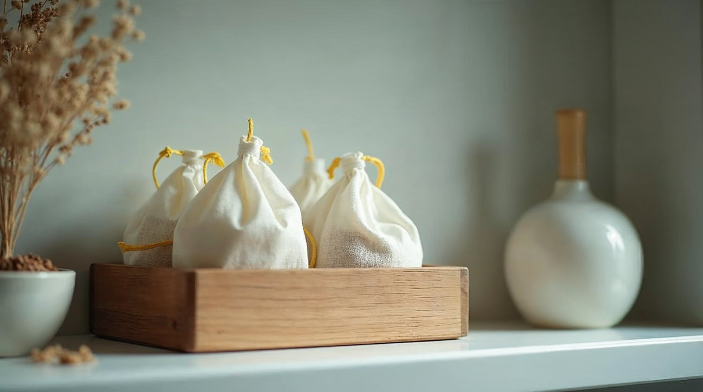
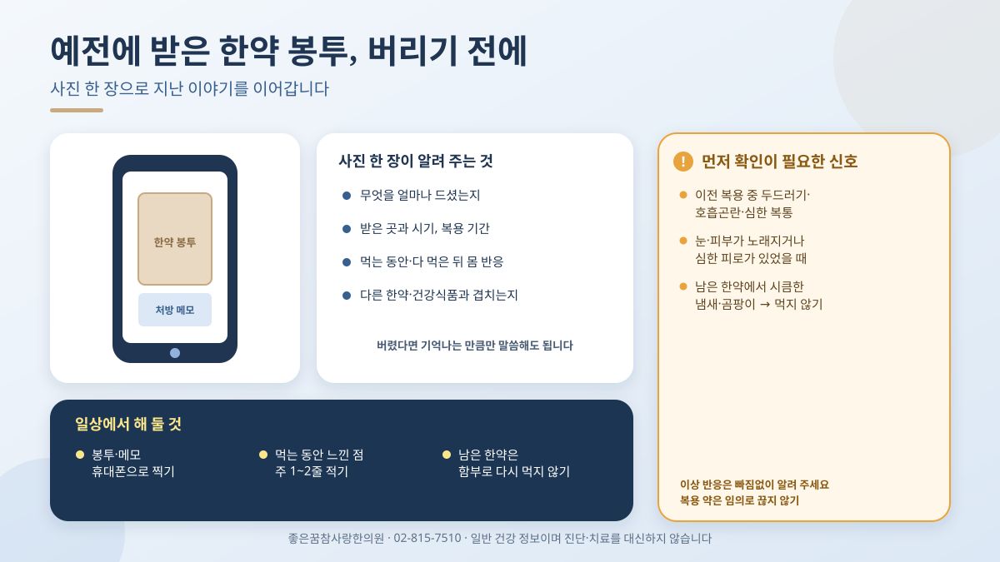

이종호 한의사 감수좋은꿈참사랑한의원 대표원장 (한의사 면허번호 19769)발행 2026-11-23 · 수정 2026-11-25
이 글의 차례
이전에 받은 한약 봉투나 처방 메모는 사진 한 장으로 남겨 진료 때 보여 주시면, 무엇을 얼마나 드셨고 몸이 어떻게 반응했는지 이어서 확인하는 단서가 됩니다. 다 먹고 나면 바로 버리는 분이 많지만, 다음 진료에서 지난 이야기를 이어가려면 작은 기록이 큰 도움이 됩니다. 버렸더라도 기억나는 만큼만 말씀해 주셔도 충분합니다.
왜 이전 기록이 도움이 될까요
- 먹는 동안 편했던 점과 불편했던 점을 알면 이번 상담에서 무엇을 더 확인할지 정하기 쉬워집니다.
- 여러 곳에서 한약이나 건강식품을 받았다면 겹치는 부분이 없는지 확인할 수 있습니다.
- 복용 기간과 횟수를 알면 그 뒤 몸의 변화를 시간 순서로 이해하기 쉽습니다.
- 처방 내용을 자세히 몰라도 받은 곳과 시기만으로도 대화의 출발점이 됩니다.
- 예전 복용 중 생긴 이상 반응을 미리 알면 이번 상담에서 조심할 점을 먼저 짚을 수 있습니다.
먼저 이렇게 여쭙니다
- 한약이나 약의 이름, 복용한 기간과 횟수는 어땠나요?
- 먹는 동안 편했던 점과 불편했던 점은 무엇인가요?
- 다 먹은 뒤 잠, 소화, 대변 등 몸의 반응은 어땠나요?
- 다른 곳에서 받은 한약이나 건강식품도 함께 드셨나요?
- 그때 한약을 지은 이유, 즉 어떤 불편 때문에 드셨나요?
일상에서 먼저 해 볼 수 있는 것
- 한약 봉투나 처방 메모를 휴대폰으로 사진 찍어 두기
- 먹는 동안 느낀 점을 일주일에 한두 줄씩 적어 두기
- 먹다 남은 한약은 보관 상태를 확인하고 함부로 다시 먹지 않기
- 다른 곳에서 받은 한약도 받은 시기와 함께 알려 주기
- 휴대폰 사진첩에 '한약' 앨범을 만들어 봉투·메모·복용 기록 사진을 한곳에 모아 두기
예를 들면 이런 경우입니다
- 예를 들어 몇 해 전 겨울에 한약을 먹고 손발이 덜 차다고 느꼈던 분이 올해 다시 상담을 받는다면, 그때의 봉투 사진과 먹은 기간을 보여 주시면 지금의 손발 온기, 잠, 소화와 비교하며 이야기를 이어 갈 수 있습니다.
- 예를 들어 부모님이 여러 곳에서 받은 한약과 건강식품을 함께 드시고 있다면, 자녀분이 각 봉투를 한 장씩 찍어 오시면 겹치는 부분이 없는지, 드시는 시간이 몰려 있지 않은지 함께 정리하기 쉽습니다.
- 예를 들어 예전 한약을 먹다가 속이 더부룩해 중간에 그만둔 경우라면, 그만둔 시점과 그때의 식사 상황을 말씀해 주시면 이번 상담에서 복용 시간과 속 상태를 먼저 살피게 됩니다.
자주 하는 오해
- 지난번과 같은 약을 그대로 지어 달라고 하시는 분도 있지만, 지금 몸 상태를 다시 살핀 뒤에 정하는 것이 원칙입니다.
- 다른 곳에서 받은 한약 이야기를 꺼내면 실례가 될까 걱정하는 분도 있는데, 안전하게 상담하기 위해 꼭 필요한 정보이니 편하게 말씀해 주세요.
- 봉투에 적힌 이름만 보면 처방을 다 알 수 있다고 여기기 쉽지만, 봉투는 출발점일 뿐이고 먹는 동안의 몸 반응이 더 중요한 단서입니다.
- 남은 한약은 아까워서 다시 드시는 경우가 있는데, 보관 기간과 상태를 알 수 없다면 드시기 전에 먼저 문의해 주세요.
한의원에서 함께 살필 수 있는 경우
- 지난번 복용 뒤 몸의 반응을 바탕으로 이번 진료에서 무엇을 더 확인할지 정합니다.
- 여러 곳에서 약을 받았을 때 겹치는 부분이 없는지 함께 확인합니다.
- 먹는 동안 불편했던 점이 있었다면 이번 처방에서 고려합니다.
좋은꿈참사랑한의원에서는 가져오신 기록을 먼저 보고 지난 복용 경험을 여쭌 뒤, 진맥을 기본으로 하고 필요하다고 판단될 때 설진·복진을 더해 지금 상태를 살펴 한약 상담 등을 정합니다. 좋은꿈참사랑한의원의 한약은 원내에서 달이며 대표원장이 약재를 검수합니다.
스스로 점검해 보세요
- 최근 1~2년 안에 한약을 먹은 적이 있다
- 그 한약을 받은 곳과 대략의 시기를 기억한다
- 봉투나 처방 메모, 복약 안내지가 집에 남아 있다
- 먹는 동안 속 불편, 두드러기, 설사 같은 반응이 있었다
- 지금도 건강식품이나 영양제를 함께 먹고 있다
- 집에 먹다 남은 한약 파우치가 있다
- 가족이 대신 받아 온 한약이라 내용을 잘 모른다
해당하는 항목은 접수 때 짧게 알려 주시고, 사진이 있다면 진료실에서 바로 보여 주세요. 하나도 해당하지 않는다면 한약은 처음이라고만 말씀해 주셔도 됩니다.
이렇게 기록해 오시면 상담이 쉬워집니다
- 한약 봉투나 처방 메모 사진
- 받은 곳, 시기, 복용 기간
- 먹는 동안과 다 먹은 뒤의 몸 반응
- 함께 먹은 약과 건강식품
- 중간에 그만두었다면 그 시점과 이유
가족이 대신 챙겨 오실 때
어르신이나 아이처럼 본인이 설명하기 어려운 경우에는 가족이 봉투 사진과 함께 먹은 기간, 먹는 동안 눈에 띈 변화를 대신 적어 오셔도 됩니다. 함께 오시기 어렵다면 메모를 들려 보내 주셔도 상담에 참고합니다. 다만 받은 분의 이름이나 주민등록번호가 적힌 부분은 사진에서 가리고 가져오셔도 괜찮습니다.
필요한 것은 약을 받은 시기, 먹은 기간, 몸의 반응입니다.
이런 증상은 먼저 확인이 필요합니다
- 이전 한약을 먹는 동안 두드러기, 호흡곤란, 심한 복통이 있었던 경우(꼭 알려 주세요)
- 눈이나 피부가 노랗게 변하거나 심한 피로가 있었던 경우
이런 신호가 있으면 한의원보다 가까운 병원이나 응급실을 먼저 찾으세요.

얼마나 지켜보고, 언제 확인하면 좋을까요
- 새로 한약을 먹기 시작했다면 처음 일주일은 잠, 소화, 대변의 변화를 하루 한 줄씩 적어 두세요. 다음 진료에서 지난 복용 경험과 비교하는 데 쓰입니다.
- 가벼운 더부룩함이나 묽은 변이 하루 이틀 있다가 가라앉는다면 기록해 두었다가 다음 진료 때 말씀해 주세요.
- 같은 불편이 사흘 넘게 이어지거나 점점 심해지면 다음 진료를 기다리지 말고 전화(02-815-7510)로 상의해 주세요.
- 두드러기, 숨이 차는 느낌, 눈이나 피부가 노래지는 변화가 보이면 복용을 멈추고 바로 연락하시고, 숨쉬기 힘들면 가까운 응급실을 이용하세요.
처음 오시면 이렇게 진행합니다
첫 방문에는 접수 때 기본 정보를 적고, 가져오신 봉투나 메모 사진이 있으면 함께 보여 주세요. 진료실에서는 지금 불편한 곳과 함께 지난 한약을 먹게 된 이유, 먹는 동안과 다 먹은 뒤의 몸 반응을 여쭙습니다. 이어서 진맥을 하고, 필요하다고 판단될 때 설진·복진을 더합니다.
한약 상담으로 이어지면 이번에는 무엇을 살피려는지, 하루 복용 시간과 함께 기록해 두면 좋은 점을 설명드립니다.
관련 글
- 한약은 왜 진단을 먼저 하고 처방하나요?
- 한약을 먹기 전에 한의원에 꼭 알려야 하는 것은 무엇인가요?
- 한의원 가기 전에 복용 약 목록은 어떻게 정리하면 좋나요?

여쭙는 것
- 한약이나 약의 이름, 복용한 기간과 횟수는 어땠나요?
- 먹는 동안 편했던 점과 불편했던 점은 무엇인가요?
- 다 먹은 뒤 잠, 소화, 대변 등 몸의 반응은 어땠나요?
생활에서 해 볼 것
- 한약 봉투나 처방 메모를 휴대폰으로 사진 찍어 두기
- 먹는 동안 느낀 점을 일주일에 한두 줄씩 적어 두기
- 먹다 남은 한약은 보관 상태를 확인하고 함부로 다시 먹지 않기
한의원에서 함께 살필 것
- 지난번 복용 뒤 몸의 반응을 바탕으로 이번 진료에서 무엇을 더 확인할지 정합니다.
- 여러 곳에서 약을 받았을 때 겹치는 부분이 없는지 함께 확인합니다.
- 먹는 동안 불편했던 점이 있었다면 이번 처방에서 고려합니다.
먼저 확인이 필요한 신호
- 이전 한약을 먹는 동안 두드러기, 호흡곤란, 심한 복통이 있었던 경우(꼭 알려 주세요)
- 눈이나 피부가 노랗게 변하거나 심한 피로가 있었던 경우
한눈에 보는 표
| 구분 | 핵심 |
|---|---|
| 여쭙는 것 | 한약이나 약의 이름, 복용한 기간과 횟수는 어땠나요? 먹는 동안 편했던 점과 불편했던 점은 무엇인가요? |
| 생활에서 해 볼 것 | 한약 봉투나 처방 메모를 휴대폰으로 사진 찍어 두기 먹는 동안 느낀 점을 일주일에 한두 줄씩 적어 두기 |
| 한의원에서 함께 살필 것 | 지난번 복용 뒤 몸의 반응을 바탕으로 이번 진료에서 무엇을 더 확인할지 정합니다. 여러 곳에서 약을 받았을 때 겹치는 부분이 없는지 함께 확인합니다. |
| 먼저 확인이 필요한 신호 | 이전 한약을 먹는 동안 두드러기, 호흡곤란, 심한 복통이 있었던 경우(꼭 알려 주세요) 눈이나 피부가 노랗게 변하거나 심한 피로가 있었던 경우 |
자주 묻는 질문
봉투를 버렸는데 괜찮나요?
괜찮습니다. 기억나는 약의 이름, 복용 기간, 몸의 반응을 말씀해 주세요.
오래전에 먹은 약도 말해야 하나요?
최근에 먹은 것이 우선이고, 오래전 일이라도 기억나는 큰 경험은 알려 주세요.
한약 이름을 모르면 어떻게 하나요?
받은 곳, 시기, 먹은 기간만 말씀해도 도움이 됩니다.
남은 한약 파우치를 가져가도 되나요?
네, 가져오셔도 됩니다. 사진만 찍어 오셔도 충분하며, 다시 드셔도 되는지는 진료 때 여쭤보세요.
좋은꿈참사랑한의원은 재진 때 지난번 이야기부터 이어서 여쭙니다. 진료시간과 예약은 오시는 길에서 확인하세요.
어디서 상담받을 수 있나요?
좋은꿈참사랑한의원은 서울 동작구 만양로2길 2 신성빌딩 3층·5층(서울 동작구 상도동, 7호선 상도역 3번 출구 근처)에 있습니다. 한의사 3명(이종호 대표원장, 조영기 수석진료원장, 정원영 진료원장)이 진료합니다. 진료시간은 평일 09:30~20:00(점심 13:00~14:00), 토·일·공휴일 09:30~15:00이며, 방문 전 전화로 확인을 권합니다. 예약은 네이버 예약, 카카오톡 상담, 전화 02-815-7510로 받습니다.
이 글은 일반적인 건강 정보이며 개인의 진단이나 치료를 대신하지 않습니다. 증상이 있거나 복용 중인 약이 있다면 진료를 통해 확인하세요. 치료 효과는 개인마다 다를 수 있습니다.
작성 기준: 일반적으로 알려져 있는 건강 정보를 참고해 정리했습니다(대표원장 감수). 증상 기록은 1~2주 동안 하루 1회, 비슷한 시간에 적어 오시면 지난 상태와 비교하기 쉽습니다.